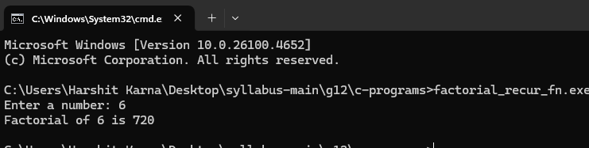
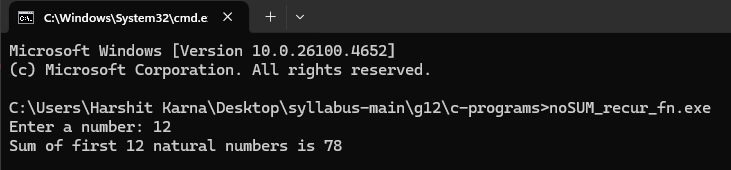
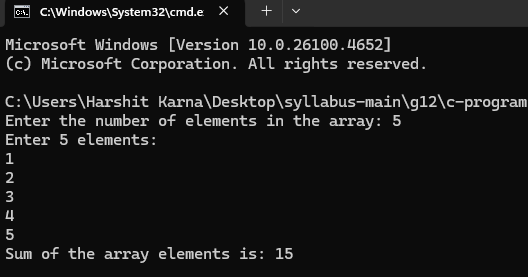
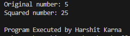
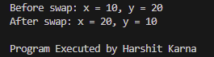
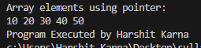

Chapter 4: C-Programming
Introduction to Function
1. Working with a Function
a. Define Function
A function is a block of code that performs a specific task. In C, functions help modularize programs and make code reusable and easier to maintain.
b. Syntax of Functions
return_type function_name(parameters)
{
// body of the function
}
c. Types of Functions
- Library Functions: Predefined functions provided by C libraries (e.g., printf(), scanf()).
- User Defined Functions: Functions created by the programmer to perform custom tasks.
d. Components of Function
- Function Prototype: Declaration of a function before its use.
- Function Call: Statement that invokes the function.
- Function Definition: Body of the function where actual statements are written.
- Return Type: Data type of value returned by the function.
2. Categories of Function with Examples
i. Function with Return Type but No Arguments
int getNumber()
{
return 10;
}
ii. Function with Return Type with Arguments
int add(int a, int b)
{
return a + b;
}
iii. Function with No Return Type and No Arguments
void display()
{
printf("Hello World");
}
iv. Function with No Return Type but with Arguments
void printNumber(int n)
{
printf("Number is %d", n);
}
3. Storage Classes
-
Automatic: Default storage class for local variables.
void demo() { int x = 10; // automatic by default printf("%d", x); } -
External: Variables declared outside all functions and accessible globally.
#include <stdio.h> int globalVar = 5; // external void show() { printf("%d", globalVar); } -
Register: Variables stored in CPU registers for faster access.
void fastAccess() { register int i; for(i = 0; i < 10; i++) printf("%d ", i); } -
Static: Variables that retain their value between function calls.
void counter() { static int count = 0; count++; printf("Count = %d\n", count); }
4. Recursive Function with Syntax and Example
A recursive function calls itself to solve smaller subproblems.
Syntax:
return_type function_name(parameters)
{
if(condition)
return result;
else
return function_name(updated_parameters);
}
Example 1: Factorial
#include <stdio.h>
int fact(int);
int main()
{
int n;
printf("Enter a number: ");
scanf("%d", &n);
printf("Factorial of %d is %d\n", n, fact(n));
return 0;
}
int fact(int n)
{
if(n == 0 || n == 1)
return 1;
else
return n * fact(n - 1);
}
Output:

Example 2: Sum of natural numbers
#include <stdio.h>
int sum(int);
int main()
{
int n;
printf("Enter a number: ");
scanf("%d", &n);
printf("Sum of first %d natural numbers is %d\n", n, sum(n));
return 0;
}
int sum(int n)
{
if(n == 0)
return 0;
else
return n + sum(n - 1);
}
Output:

5. Passing Array to a Function
Example: Sum of Array Elements
#include <stdio.h>
void addarray(int[], int);
int main()
{
int n;
printf("Enter the number of elements in the array: ");
scanf("%d", &n);
int arr[n];
printf("Enter %d elements:\n", n);
for(int i = 0; i < n; i++)
{
scanf("%d", &arr[i]);
}
addarray(arr, n);
return 0;
}
void addarray(int arr[], int size)
{
int sum = 0;
for(int i = 0; i < size; i++)
{
sum += arr[i];
}
printf("Sum of the array elements is: %d\n", sum);
}
Output:

Structure and Union
Introduction to Structure
A struct (short for structure) in C is a user-defined data type that groups together different variables (possibly of different types) under one name. It is used to represent a record or a collection of related data.
Syntax:
struct StructName {
dataType member1;
dataType member2;
...
dataType memberN;
};
Size Determination:
The total size of the struct is determined by the variables used in the struct. Specifically, it is the sum of the bytes that each of the variables would store.
struct Example {
char c; // 1 byte
int i; // 4 bytes
};
In this example, the total storage size of struct is 1 + 4 = 5 bytes. (Note: the compiler generally stores some extra padding space, which can be neglected as its usually ~3-4 bytes)
Using and accessing struct
Example 1:
#include <stdio.h>
// Defining a struct
struct Student {
int id;
char name[20];
float marks;
};
int main() {
struct Student s1 = {101, "Harshit", 89.5}; // Initializing a struct
printf("Student ID: %d\n", s1.id);
printf("Student Name: %s\n", s1.name);
printf("Student Marks: %.2f\n", s1.marks);
printf("\nProgram Executed by Harshit Karna");
return 0;
}
Output:

Nested struct
Example 1:
#include <stdio.h>
// Defining nested structs
struct Address {
char city[20];
int pin;
};
struct Student {
int id;
char name[20];
struct Address addr; // Nested struct
};
int main() {
// Creating a struct variable
struct Student s1 = {101, "Harshit", {"Kathmandu", 44600}};
printf("Student ID: %d\n", s1.id);
printf("Student Name: %s\n", s1.name);
printf("City: %s\n", s1.addr.city);
printf("PIN Code: %d\n", s1.addr.pin);
printf("\nProgram Executed by Harshit Karna");
return 0;
}
Output:

Array of Struct
Example 1: C program that inputs id, name and price of N number of books using Structure and print them.
#include <stdio.h>
struct books {
int bookid;
char bookname[50];
unsigned int price;
};
void strdsply(struct books book[], int n) {
int i;
printf("The data stored is:\n\n");
printf("Book ID\tBook Name\tPrice\n");
for (i = 0; i < n; i++) {
printf("%d\t%s\t\t%u\n", book[i].bookid, book[i].bookname, book[i].price);
}
}
int main() {
int n = 0, i;
typedef struct books stbk;
printf("How many books to enter? ");
scanf("%d", &n);
stbk book[n];
for (i = 0; i < n; i++) {
printf("Enter book id: ");
scanf("%d", &book[i].bookid);
printf("Enter book name: ");
scanf("%s", book[i].bookname);
printf("Enter its price: ");
scanf("%d", &book[i].price);
}
strdsply(book, n);
printf("\nProgram Executed by Harshit Karna\n");
return 0;
}
Output:

Passing Struct to Function
Example: C program that inputs name and address of 5 students using Structure and arrange them alphabetically by the name of the student.
#include <stdio.h>
#include <string.h>
struct student {
char name[50];
char address[100];
};
void inptStd(struct student s[], int n) {
int i;
for (i = 0; i < n; i++) {
printf("Enter name of student %d: ", i + 1);
scanf("%s", s[i].name);
printf("Enter address of student %d: ", i + 1);
scanf(" %s", s[i].address);
}
}
void sortStd(struct student s[], int n) {
struct student temp;
int i, j;
for (i = 0; i < n - 1; i++) {
for (j = i + 1; j < n; j++) {
if (strcmp(s[i].name, s[j].name) > 0) {
temp = s[i];
s[i] = s[j];
s[j] = temp;
}
}
}
}
void dsplyStd(struct student s[], int n) {
printf("\nStudents sorted by name:\n");
printf("Name\t\tAddress\n");
int i;
for (i = 0; i < n; i++) {
printf("%s\t\t%s\n", s[i].name, s[i].address);
}
}
int main() {
struct student students[5];
inptStd(students, 5);
sortStd(students, 5);
dsplyStd(students, 5);
printf("\nProgram Executed by Harshit Karna");
return 0;
}
Output:

Union
Introduction:
A union in C is a special data type that allows you to store different data types in the same memory location. Unlike a struct, where each member gets its own memory location, all members of a union share the same memory space. The size of a union is determined by the size of its largest member.
Syntax:
union UnionName {
dataType member1;
dataType member2;
...
dataType memberN;
};
Comparison Between Struct & Union
| Aspect | Struct | Union |
|---|---|---|
| Memory Allocation | Each member has its own memory; total size is sum of all members (plus padding). | All members share the same memory; size is equal to the largest member. |
| Storage | Can store values of all members simultaneously. | Can store value of only one member at a time. |
| Usage | Used when data of different types must be stored together and accessed independently. | Used when only one member is needed at a time, to save memory. |
| Access | All members can be accessed without affecting others. | Changing one member changes the shared memory, affecting others. |
| Size | Larger, since it is the sum of all member sizes. | Smaller, since it is equal to the largest member size. |
Pointers
Introduction and Syntax
A pointer is a variable that stores the address of another variable. Pointers enable indirect access to memory, efficient parameter passing, dynamic memory management, and working with arrays/strings.
General Syntax
data_type *ptr; // ptr is a pointer to data_type
ptr = &variable; // store the address of variable into ptr
*ptr // dereference: access the value stored at that address
Usage and Working
- Address-of (&): obtains the memory address of a variable.
- Dereference (*): accesses/updates the value at the address stored in a pointer.
- Null pointers: initialized to
NULL(or0) to indicate “points to nothing.” - Pointer arithmetic: adding/subtracting integers moves by element size (e.g.,
int*steps bysizeof(int)).
Concept of Value and Address
Every variable has two aspects: its value (the data it holds) and its address (where it lives in memory). Pointers store addresses and let us read or modify the value indirectly through dereferencing.
| Term | Meaning | Operator / Example |
|---|---|---|
| Value | Actual data stored in a variable | x |
| Address | Memory location of that variable | &x |
| Pointer | Variable that stores an address | int *p = &x; |
| Dereference | Access value at stored address | *p gives value of x |
Declaration and Initialization
int x = 10;
int *p = &x; // initialized to address of x
int *q = NULL; // safe "points to nothing" until assigned
Pointer and Function
Idea: Pass addresses to functions so users can access/modify caller data efficiently.
#include <stdio.h>
void square(int *n) {
*n = (*n) * (*n);
}
int main() {
int num = 5;
printf("Original number: %d\n", num);
square(&num); // pass address to function
printf("Squared number: %d\n", num);
printf("\nProgram Executed by Harshit Karna");
return 0;
}
Output:
Call by Reference
Idea: Simulate call-by-reference in C by passing addresses (pointers) of variables to functions.
#include <stdio.h>
void swap(int *a, int *b) {
int temp = *a;
*a = *b;
*b = temp;
}
int main() {
int x = 10, y = 20;
printf("Before swap: x = %d, y = %d\n", x, y);
swap(&x, &y); // pass addresses for call by reference
printf("After swap: x = %d, y = %d\n", x, y);
printf("\nProgram Executed by Harshit Karna");
return 0;
}
Output:
Comparison between Call by Value and Call by Reference
| Aspect | Call by Value | Call by Reference (via pointers) |
|---|---|---|
| What is passed | A copy of the value | Address of the original variable |
| Effect on caller data | No change to original | Function can modify original |
| Memory/Speed | Extra copying for large data | Efficient for large data (no copy) |
| Safety | Safer (isolation) | Requires careful handling of pointers |
Pointer with Arrays
Key facts: Array name often acts like a pointer to its first element; a[i] equals *(a + i).
#include <stdio.h>
int main() {
int arr[5] = {10, 20, 30, 40, 50};
int *p = arr; // array name acts as pointer to first element
printf("Array elements using pointer:\n");
for (int i = 0; i < 5; i++) {
printf("%d ", *(p + i));
}
printf("\nProgram Executed by Harshit Karna");
return 0;
}
Output:
Advantages and Disadvantages
| Advantages | Disadvantages |
|---|---|
| Efficient parameter passing for large data | Dangling/NULL pointer dereference can crash |
| Enables dynamic memory management | Pointer arithmetic errors are subtle |
| Supports complex data structures (lists, trees) | Harder to read/maintain if misused |
| Direct memory access when needed | Security risks if not validated |
File Handling in C
Concept of Data File
A data file stores information on secondary storage (disk) in a persistent form so that programs can read/write it across multiple executions.
Need for File Handling in C
- Persist data beyond program termination.
- Handle large datasets that do not fit in memory.
- Exchange data between programs and sessions.
Sequential and Random Files
| Type | Access Pattern | Use Case |
|---|---|---|
| Sequential File | Read/write in order from start to end | Logs, reports, line-by-line processing |
| Random (Direct) File | Jump to any location (seek by offset) | Databases, indexed records, partial updates |

File Handling Functions (Purpose & Syntax)
| Function | Purpose | Syntax |
|---|---|---|
fopen() |
Open a file and return a FILE* stream |
FILE *fp = fopen("name","mode"); |
fclose() |
Close an open file stream | int r = fclose(fp); |
getc(), putc() |
Character I/O on files | int ch = getc(fp); int r = putc(ch, fp); |
fprintf(), fscanf() |
Formatted text I/O | fprintf(fp, "fmt", ...); fscanf(fp, "fmt", &...); |
getw(), putw() |
Integer I/O (non-standard/obsolete on many systems) | int n = getw(fp); putw(n, fp); |
fgets(), fputs() |
Line/string I/O | char *s = fgets(buf, size, fp); fputs(s, fp); |
fread(), fwrite() |
Binary block I/O | size_t n = fread(ptr, sz, cnt, fp); fwrite(ptr, sz, cnt, fp); |
remove(), rename() |
Delete or rename a file | int r = remove("old.txt"); int r2 = rename("old","new"); |
Random Access Functions (Purpose & Syntax)
| Function | Purpose | Syntax |
|---|---|---|
fseek() |
Move file position indicator to offset | int r = fseek(fp, offset, origin); |
rewind() |
Set position to beginning (like fseek(fp,0,SEEK_SET)) |
rewind(fp); |
ftell() |
Get current file position | long pos = ftell(fp); |
File Opening Modes
| Mode | Meaning | Must Exist? | Pointer Position |
|---|---|---|---|
r |
Read (text) | Yes | Start |
r+ |
Read/Write (text) | Yes | Start |
w |
Write (truncate/create, text) | No | Start |
w+ |
Read/Write (truncate/create, text) | No | Start |
a |
Append (text) | No | End |
a+ |
Read/Append (text) | No | End (reads from start, writes at end) |
Binary variants: add b (e.g., "rb", "wb", "ab").
Steps to Work with File in C
- Define File Pointer — e.g.,
FILE *fp; - Open File with Required Mode —
fp = fopen("data.txt","r"); - Read, Write, Append Operations — use appropriate functions.
- Close the File —
fclose(fp);
Writing Data on Files
#include <stdio.h>
int main() {
FILE *fp;
fp = fopen("901.txt", "w"); // open file in write mode
fprintf(fp, "Hello, this is a test file.\n");
fclose(fp);
printf("Data written successfully.\n");
printf("\nProgram Executed by Harshit Karna");
return 0;
}
Output:
.png)
.png)
Reading Data from Files
#include <stdio.h>
int main() {
FILE *fp;
char ch;
fp = fopen("901.txt", "r"); // open file in read mode
printf("Contents of 901.txt:\n");
while ((ch = getc(fp)) != EOF) {
putchar(ch);
}
fclose(fp);
printf("\nProgram Executed by Harshit Karna");
return 0;
}
Output:
.png)
Appending Data Files
#include
int main() {
FILE *fp;
fp = fopen("901.txt", "a"); // open file in append mode
fprintf(fp, "I can keep adding new info using append.\n");
fclose(fp);
printf("Data appended successfully.\n");
printf("\nProgram Executed by Harshit Karna");
return 0;
}
Output:
.png)
.png)
End of File (EOF)
EOF signals that no more data can be read from a file stream. Many I/O functions return
EOF (commonly -1) or NULL to indicate end-of-file or error.
typedef Keyword in C
typedef creates an alias (alternate name) for existing types, improving readability and portability.
Syntax
typedef existing_type NewName; // e.g., typedef unsigned long ulong;